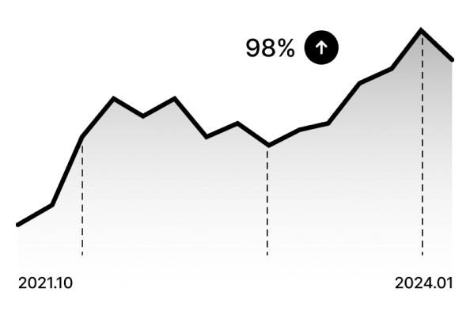
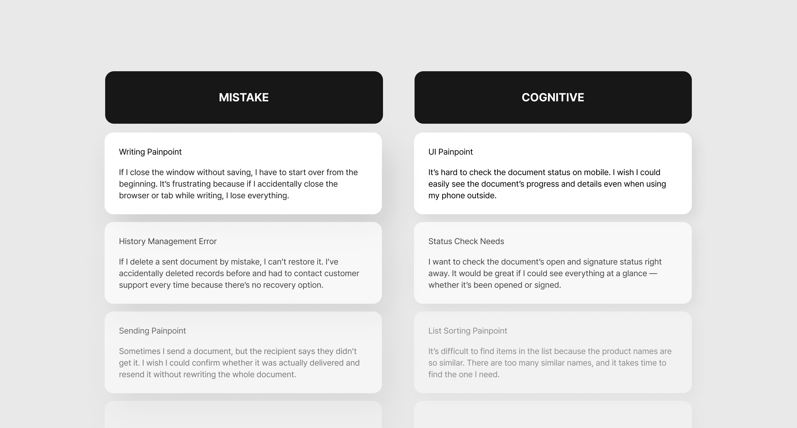
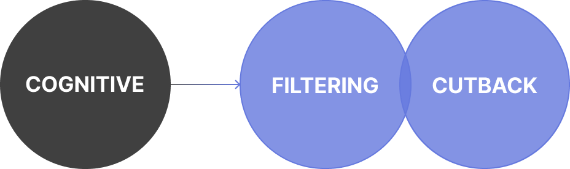
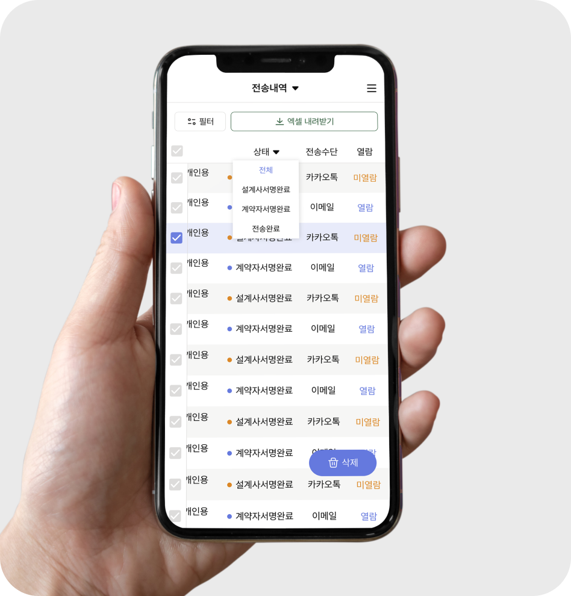
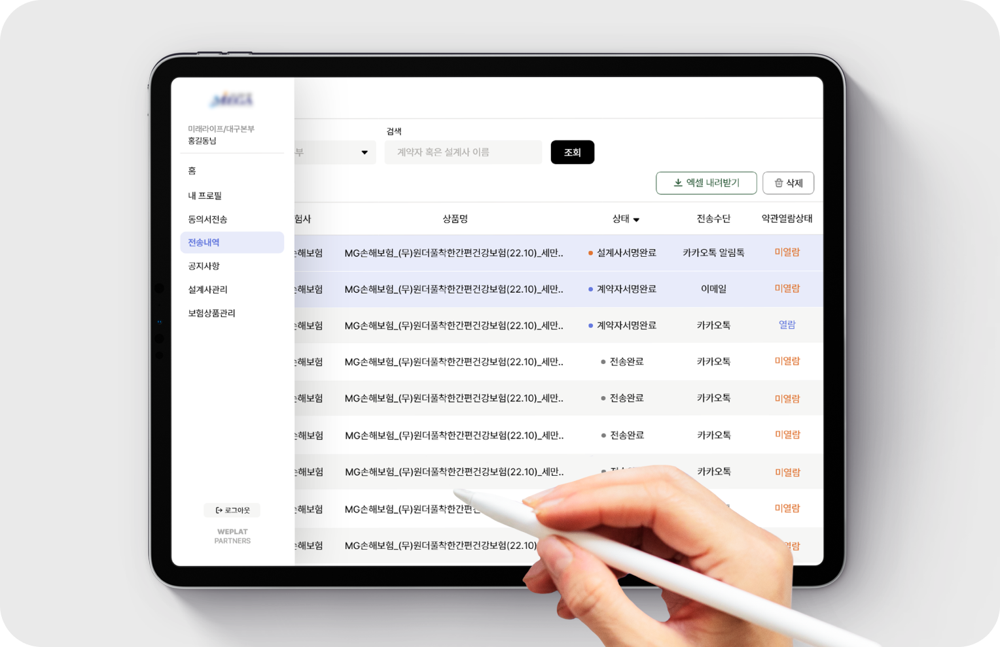
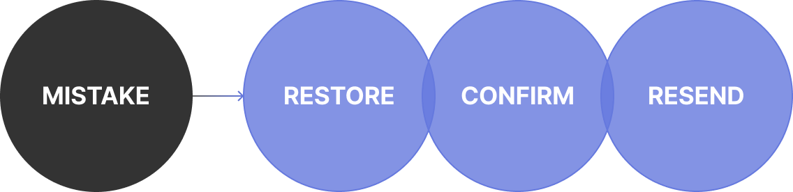
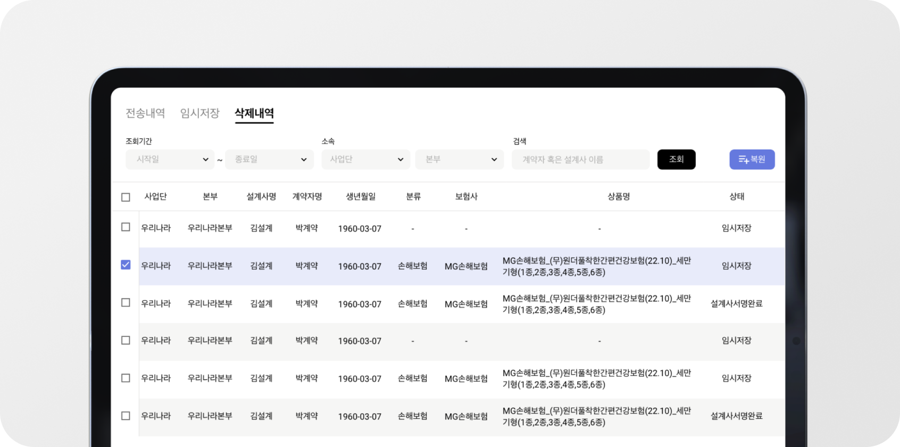
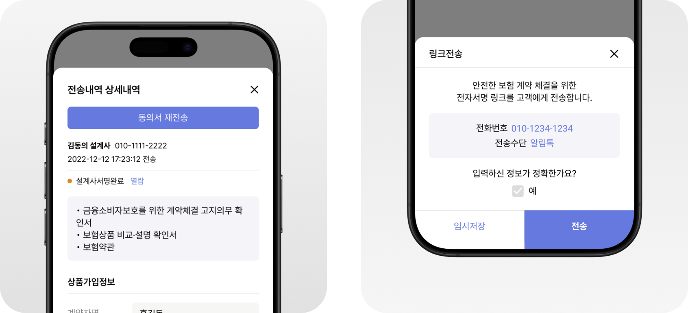

E-Signature Service

Insurance agents send required documents via a web platform, and customers can review and sign them on their mobile devices through a secure link.
Based on insights from user feedback and interviews, we identified key friction points and refined the user experience accordingly.
Over two years since launch, usage has grown by 98%, with continued stable engagement and minimal drop-off.

Led user communication and UX strategy
- Identified key issues through user feedback, CS data, and interviews
- Prioritized issues and formulated improvement strategies
- Designed and implemented UX/UI improvements
Users Always Make Mistakes — and They Want to Find What They Need Instantly
According to the VOC (Voice of Customer) analysis, users’ pain points fell into two main categories.
The first issue was making mistakes during a task and being unable to recover from them. If users deleted something by accident or needed to revise their work, there was no way to view history or undo the action — they had to start all over again.
The second issue was the difficulty of finding information quickly. To check details like delivery status or signature completion, users had to move between multiple screens. This was especially inconvenient on mobile, increasing their cognitive load and frustration.

#1. Reduced cognitive load and improved status visibility
By enhancing the responsive UI and mobile accessibility, users can now quickly check document status — whether it’s been opened or signed — even while on the go. Additionally, detailed filters were added to the list view, allowing users to easily identify which documents have been opened or completed. This reduces cognitive load and improves overall efficiency in document management.

📱 Better mobile access

📄 More detailed filters

#2. Even with mistakes, you don’t lose your progress.
By adding features like temporary saving and a deletion history, users can now continue their work without starting over, even after making mistakes or being interrupted.
An additional review step was introduced before the final submission, allowing users to double-check and confirm their entered information before sending.

🗃️ Check and recover past activity

✅ Transmission flow that prompts user review
